The Muscle Editor gives you access to all of the parameters of the muscles and other actuators in the model. The paths of the muscles can be altered by selecting and moving attachment points in the 3D View window, and the force-generating parameters can be viewed and modified in the Properties window. The topics covered in this chapter include:
Selecting Models and Muscles
As described in the section on Property editing, you can select muscles for editing by either selecting the corresponding nodes in the Navigator window (you may need to expand the nodes for the top level model, Forces, Muscles, all) to see the nodes corresponding to individual muscles in the model as shown below. You can also select muscles in the 3D view window.
| 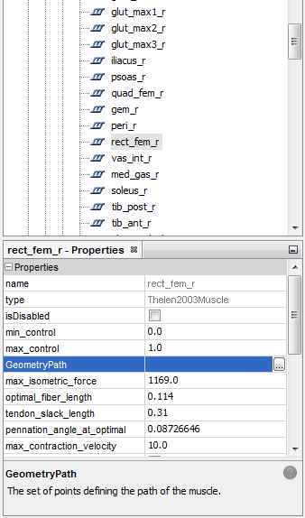 | Using the Navigator Window
Using the 3D View Window
|
|---|
Muscle Paths and Muscle Points
The path of a muscle is defined by a series of attachment points. In the simplest case, each attachment point is fixed to a body, and the path of the muscle is the set of straight lines connecting each pair of adjacent points. These attachment points are called fixed points.
There are three other types of muscle points that can be used to define a muscle path. Via points are attachment points that are fixed to a body, but they are used in the muscle path only when a specified coordinate is in a certain range. These points can be used to implement simple cases of wrapping, such as the quadriceps wrapping over the distal femur when the knee flexes beyond a certain angle.
Another type of attachment point is called a moving muscle point. These are points whose X, Y, and/or Z offsets in a body's reference frame are functions of coordinates, rather than simple constants. This type of point is useful when you want the muscle path to move as a joint flexes, but wrap objects are not suitable for implementing the proper motion.
The last type of attachment point is a wrap point. Wrap points are attachment points whose XYZ offsets are calculated automatically by OpenSim in order to wrap a muscle over the surface of a wrap object. Wrap objects are geometric shapes (spheres, ellipsoids, cylinders, and torii) that you can use to constrain the paths of the muscles. When the straight-line path of a muscle intersects a wrap object, an algorithm calculates a new path between the two points that wraps smoothly over the object. To define the new path, two wrap points are introduced: one at the tangent point where the path initiates contact with the object, and one at the tangent point where the path breaks contact. The muscle path between these two wrap points is a curved path that follows the surface of the object.
Path Editor
| 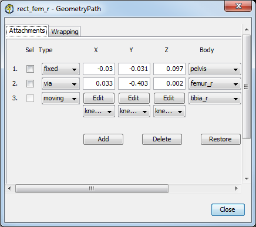 | The Geometry Path of a muscle is a representation of the muscle's line of action. This is a "Property" of all the muscles in OpenSim, as such it shows as an entry in the Properties window as shown above. If you click the ... Button next to the GeometryPath in the Properties window, the dialog at left will appear.
|
|---|
Attachments
| 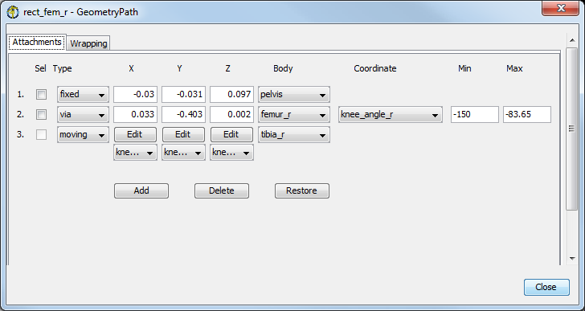 | The Attachments panel gives you access to all of the fixed, via, and moving muscle points that define the path of the muscle. The table below has more information about each column of information in this panel. |
|---|
1. 2. .... | <muscle point index> – the index of the attachment point, corresponding to the numbers in the Attachment panel shown at left. This index is used by the Add and Delete buttons, described below, as well as the start point and end point parameters for wrapping. These indices do not change when via points turn on or off or when wrapping points are added to the path. They change only when you add or delete fixed, via, or moving attachment points. |
|---|---|
| Sel – this checkbox indicates whether or not the muscle point is selected in the model window. Selected attachment points can be dragged to new locations using the mouse. | |
| 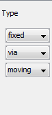 | Type – the type of the attachment point: fixed, via, or moving. Fixed points are points whose XYZ offsets are fixed in a body's reference frame. Via points are points that are fixed to a body, but they are used in the muscle path only when a specified coordinate is in a certain range. Moving muscle points are points whose X, Y, and/or Z offsets in a body's reference frame are functions of coordinates, rather than simple constants. |
| 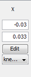 | X – the X offset of the attachment point in the body's reference frame. For fixed and via points, this offset is a constant. You can change the value by clicking in the number field and entering a new value. For moving muscle points, the offset is a function of a coordinate, rather than a constant. To edit the function, click the Edit button to display it in the Function Editor window. |
 | Y – the Y offset of the attachment point in the body's reference frame. For fixed and via points, this offset is a constant. You can change the value by clicking in the number field and entering a new value. For moving muscle points, the offset is a function of a coordinate, rather than a constant. To edit the function, click the Edit button to display it in the Function Editor window. |
| 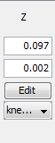 | Z – the Z offset of the attachment point in the body's reference frame. For fixed and via points, this offset is a constant. You can change the value by clicking in the number field and entering a new value. For moving muscle points, the offset is a function of a coordinate, rather than a constant. To edit the function, click the Edit button to display it in the Function Editor window. |
| 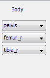 | Body – the body to which the muscle point is attached. |
| 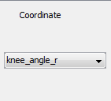 | Coordinate – For via points, this is the coordinate that controls whether or not the point is included in the muscle path (active). The point is active only when the coordinate is between the specified minimum (Min) and maximum (Max) values. |
| 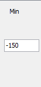 | Min – For via points, the lower bound of coordinate values for which the point is active. If the coordinate has a value that is below this minimum, the attachment point is not included in the path of the muscle. |
| 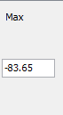 | Max – For via points, the upper bound of coordinate values for which the point is active. If the coordinate has a value that is above this maximum, the attachment point is not included in the path of the muscle. |
Wrapping Panel
The Wrapping panel shows the wrap objects that are currently associated with the muscle, and provides an interface for adding, deleting, and modifying these associations. When more than one wrap object is associated with a muscle, the order in which the objects are applied to the muscle is the order in which they are listed in the Wrapping panel. In many cases, the ordering of wrap objects does not affect the resulting path of the muscle, but when the objects are close to or intersect each other, changing the order may change the muscle path.
To move a wrap object up in the order, click on the blue up arrow to the far left of the object's name. To move it down in the order, click on the blue down arrow. To delete the association, click on the red "x". This does not delete the wrap object from the model; it merely removes it from the list of objects applied to this one muscle. To add a wrap object association, click on the blue + sign and choose a wrap object from the drop down menu.
| 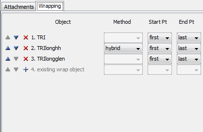 | This panel shows all of the wrap objects that are associated with the muscle. You can add to, delete from, or reorder the list, as well as restrict the wrapping of each object to a subset of the muscle path. For ellipsoid wrap objects, you can also specify the algorithm used to calculate the wrapping path. (This is the TRIlong muscle in arm26 model) |
|---|
The Start Pt and End Pt parameters let you control which sections of the muscle are allowed to wrap over the wrap object. For example, if Start Pt = 1 and End Pt= 4, then only the segments of the muscle path between the first and fourth attachment points will be checked for possible wrapping over the wrap object. These indices correspond to the indices of the points listed in the Attachments panel. If Start Pt = first, then the starting point will always be the first attachment point in the muscle. Similarly, if End Pt = last, then the ending point will always be the last attachment point. In contrast, if Start Pt = 1, and then you add a new attachment point to the muscle before point 1, Start Pt will automatically be adjusted to 2 so that it still corresponds to the same attachment point in the list. In most cases, you will want to set Start Pt = first and End Pt = last, so that the entire path is checked for possible wrapping. However, for muscles which have more than one wrap object association, or are associated with wrap objects that are constrained (i.e., only half the object is active), it is sometime helpful to restrict the wrapping to a subset of the muscle path.
Restoring
When you modify any element of the GeometryPath, the modification occurs immediately to the muscle stored in the model. You do not need to apply the change to make it happen, nor can you cancel the change before it takes effect. To allow you to undo changes made to the muscles, there is a Restore button at the bottom of the Path Editor window that will restore the state of the path to the value when the dialog was opened.
Editing Attachment Points
The paths of the muscles can be modified by selecting attachment points and moving them to new locations in the reference frames of the bodies to which they are attached. You can select multiple attachment points on multiple muscles and move them at the same time without opening the Path Editor. Fixed points and via points can be selected and moved interactively in the model window. Moving muscle points cannot be selected, but the functions defining their movement can be modified with the Function Editor. Wrap points cannot be selected or moved, because their positions are calculated by the muscle wrapping algorithms. The topics covered in this section include:
Selecting Attachment Points
There are two methods to select muscle attachment points. The first method operates in the 3D View window. Press the ctrl key to enter the selection mode. You will see the cursor change into a small crosshair to indicate that you are in selection mode. Keep the ctrl key pressed and left click on an attachment point to select it. If you also hold down the shift key, you can select multiple attachment points. To unselect all points, press ctrl and left click on a point away from the model.
The second method of selecting attachment points is to click on the Sel checkbox in the Attachments panel. Choose the muscle whose points you want to select (see Selecting Models and Muscles above), and then click on the Attachments tab. Click on the Sel box of the desired point(s).
When an attachment point is selected, it is displayed in yellow on the 3D model, and its name is shown in the text bar at the bottom of the OpenSim window.
Moving Attachment Points
There are two methods for moving muscle attachment points. The first method is to move points interactively in the 3D View window. Select the points you want to move visit Selecting Attachment Points for information on how to select attachment points. Move the cursor over any of the selected points, and press the left mouse button. While holding the button down, you can drag the attachment points within the plane of the screen. All of the selected points will move the same amount, so it does not matter which one you click on. To move the points in a different plane, release the left mouse button, rotate the model view as desired, and then press the left mouse button on any selected point to resume dragging.
The second method of moving attachment points is to type their exact XYZ offsets into the number fields in the Attachments panel. For this method, the muscle points do not need to be selected, but you can only modify the attachments of the current muscle. Click on the appropriate X, Y, or Z number field, and type in the desired value. These offsets are expressed in the reference frame of the body to which the point is attached, which is shown just to the right of the Z field. For the moving muscle points, the number fields are replaced by Edit buttons. When you click on an Edit button, the function for that offset will be displayed in the Function Editor so you can modify it.
Adding and Deleting Attachment Points
The Attachments panel contains buttons for adding and deleting muscle attachment points. These are located below the list of current attachments.
When you click the left mouse button on the Add button, a drop down menu is displayed, giving you a choice of where to add the new point. If you add the new point between two existing points, it will be added halfway between the two. If you add the point before the first or after the last point, the new point will be added a short distance away from the appropriate end point. You can then select the point and move it to the desired location, or type its exact XYZ coordinates into the number fields in the Attachments panel.
To delete an attachment point, click on the Delete button and choose the index of the point you want to delete. For both the add and delete functions, the indices shown in the drop down menus are the same as the indices of the muscle points shown in the Attachments panel. They do not depend on whether or not via points are active, and do not take into account any wrap points which may be currently included in the path.
Ellipsoid Wrapping Algorithms
To overcome numerical instabilities involved with computing the optimal path over the surface of an ellipsoid, OpenSim allows you to choose between three different algorithms for calculating muscle paths over ellipsoidal wrap objects. The hybrid method works well for most muscles. However, if you notice erratic muscle motion (e.g., skips or jumps when wrapping over an ellipsoid), you can often achieve a smooth motion with the midpoint or axial algorithms.
Hybrid Wrapping Method
The hybrid method determines a wrapping path by computing a weighted average of the results of the midpoint and axial methods, described below. The accuracy of each result is used to determine its contribution to the overall path. In most cases, this results in a smooth transition between the two wrapping methods. Occasionally you may experience an artificial change in slope in plots generated from muscles that use the hybrid wrapping method. This is a side effect of the hybrid method that can occur as the weighting shifts from favoring the midpoint result to favoring the axial result or vice versa. In these cases you will want to switch to either the midpoint or axial method rather than the hybrid.
Midpoint Wrapping Method
The midpoint method chooses a wrapping plane (i.e., the plane the muscle path will occupy when wrapped around the ellipsoid) by finding the point on the surface of the ellipsoid closest to the midpoint of the imaginary muscle line passing straight through the ellipsoid. This method produces smooth changes in the wrapping path unless the muscle line through the ellipsoid passes close to the center of the ellipsoid. In this situation the midpoint method becomes numerically unstable, creating erratic jumps in the wrapping path it computes. If you are able to orient your wrap objects such that muscles do not pass near the ellipsoid's center, then the midpoint method will produce well-behaved wrapping paths.
Axial Wrapping Method
The axial method chooses one of the ellipsoid's principal axes, X, Y, or Z, and then computes a wrapping path based on the point where the imaginary muscle line passing straight through the ellipsoid intersects the plane perpendicular to that axis (i.e., the X=0, Y=0, or Z=0 planes). For example, if the X-axis is chosen, then the intersection of the muscle line with the x = 0 plane is used to find a point on the surface of the ellipsoid. The surface point is then used to determine the wrapping plane.
The axial method works best when the muscle line is nearly parallel to the chosen axis. The accuracy of the axial method decreases as the angle between the muscle line and the chosen axis increases. Therefore, the axial method automatically chooses the principal axis that is most parallel to the muscle line. This method produces a good result unless the "most parallel" axis happens to change during the range of motion of the muscle. In this situation a discontinuity in wrapping path will occur when the choice of axis switches from one principal axis to another. The hybrid method described above automatically detects when an axis switch is about to take place, and shifts its weighted average to favor the midpoint method to conceal the effect of the axis switch. If you are able to orient your wrap object such that muscles that wrap over it remain mostly parallel to the same axis throughout their range of motion, then the axial method will produce well-behaved wrapping paths.
{kind=link}
{kind=link}
{kind=link}
{kind=link}
{kind=link}
{kind=link}
{kind=link}
{kind=link}
{kind=link}
{kind=link}
{kind=link}
{kind=link}